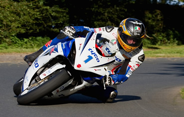

Motorcycle MOT Testing In Hull
AAMG Hull Ltd now has full facilities for class 1 & 2 motorcycle M.O.T testing, this ranging from small twist and go scooters to full sports bikes or touring bikes. We also extend our facilities to motorcycle service and minor repairs.
For a friendly and competitive price call today on: (01482) 223813 or pop in and see us and we will be happy to help.
AAMG Hull Ltd is also a registered member of the Good Garage Scheme, in which we perform services to a strict code of conduct and will always have your best interests at heart.
Motorcycle MOT Testing Information
The MOT tests some important items on your motorcycle to check that they meet the legal standards. It is not the same as having your vehicle serviced and does not check its general mechanical condition. More Info Here
Below is a list of what checks are involved in the standard United Kingdom MOT test for motorcycles and motorbikes:
- Sitting On Machine Check
- 1. All Controls, Switches And Horn
- 2. Front Suspension, Forks, Handlebars And Head Bearings
- At The Front Of The Machine Check
- 1. Front Lights And Indicators
- 2. Front Brake Master Cylinder (If Fitted)
- Place The Machine On Its Stand And Raise Front Wheel Check
- 1. Steering, Front Forks And Head Bearings
- 2. Front Brake And Wheel Bearings
- 3. Wheel And Tyre Condition
- Lower Front Wheel And Go To Right Side Of Vehicle And Check
- 1. Frame, Vin, Seat And Foot Rest
- 2. Exhaust System
- 3. Final Drive (If Fitted To RHS Of Machine)
- 4. Rear Wheel, Tyre And Brake
- Raise The Rear Wheel And Check
- 1. Rear Wheel, Rear Brake/Components And Tyre Condition
- 2. Rear Suspension And Final Drive
- At The Rear Check
- 1. Rear Position Lamps/Stop Lamps/Reflectors And Indicators
- 2. Rear Suspension
- 3. Registration Plate
- On The Left Of The Machine Check
- 1. Frame And Foot Rest
- 2. Exhaust System
- 3. Final Drive (If Fitted To LHS Of Machine)
- 4. Rear Wheel, Tyre And Brake
- At The Front Of The Machine Check
- 1. Wheel Alignment
- 2. Headlamp Aim
- 3. Brake Performance